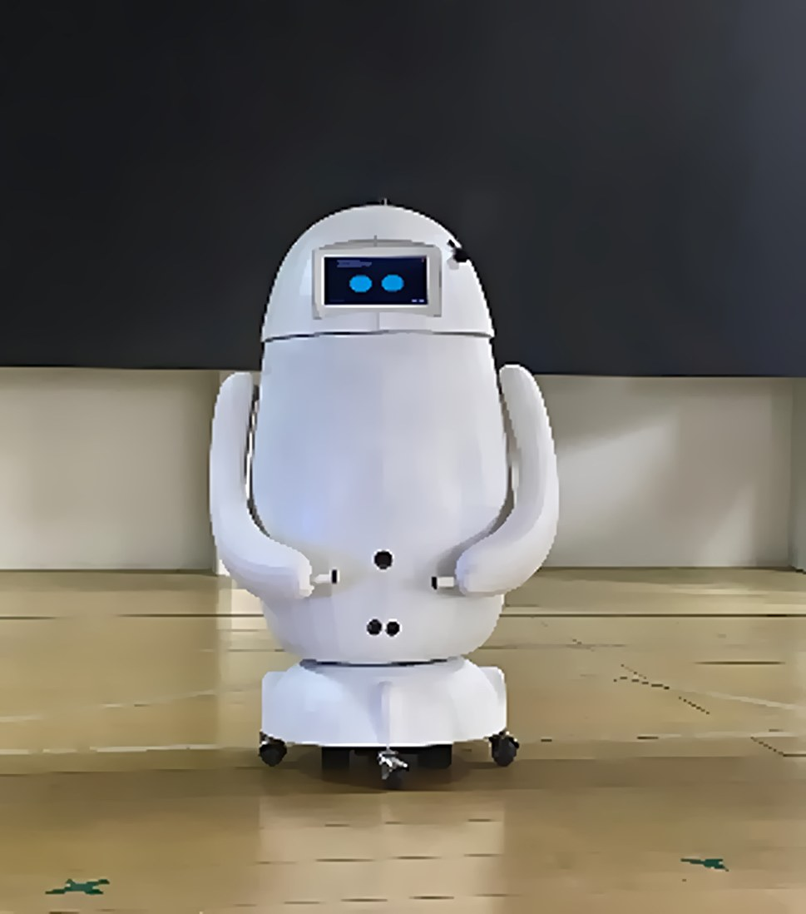
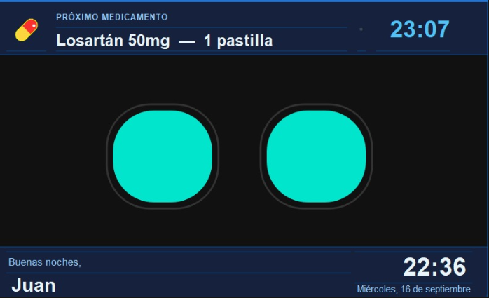
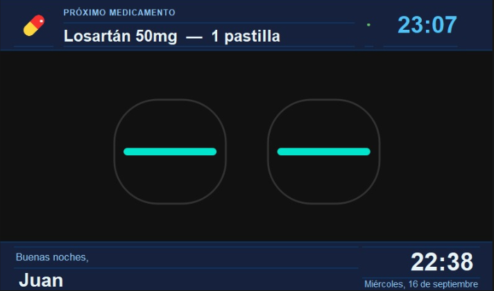
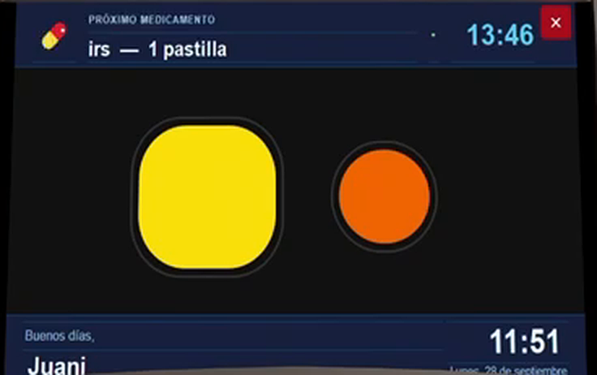
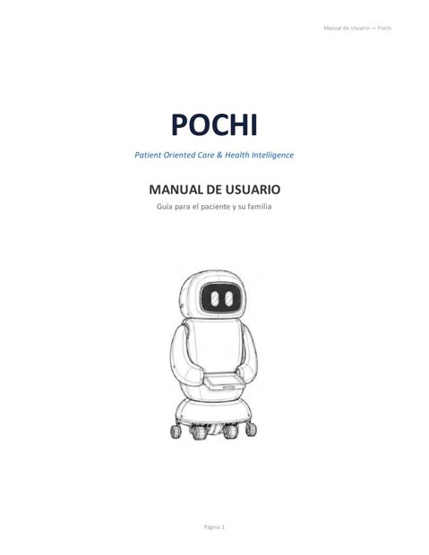
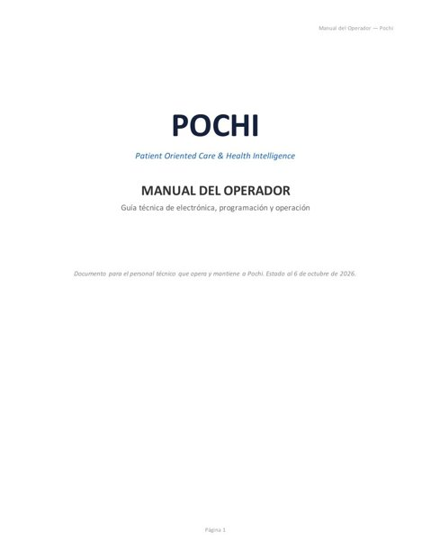

Recursos/hw_raspberry.jpgRaspberry Pi 5
El cerebro que decide. Corre la pantalla, la voz y toda la lógica de horarios.
Dos cerebros que se reparten el trabajo, piezas reales de robótica y un ciclo de entrega pensado para que nada quede a medias. Aquí está la explicación completa, con los videos técnicos.

La Raspberry Pi 5 decide qué hacer y cuándo. El ESP32 solo ejecuta movimientos exactos. Toda la dispensación vive en el ESP32: si la comunicación falla a la mitad, la pastilla nunca queda a medio entregar.
Otro ESP32 que el paciente lleva puesto. Emite su señal cada 100 ms.
Horarios, búsqueda del paciente, pantalla táctil, voz e historial.
Orugas, brazos, los 4 dispensadores de color y sus sensores.
Fondo oscuro para no cansar la vista, letras grandes y los ojos de Pochi al centro. Arriba siempre está el próximo medicamento.

Recursos/pantalla_principal.png
Recursos/pantalla_parpadeo.pngLa luz verde junto a la hora indica que Pochi reconoce la pulsera del paciente y puede rastrearla. Si la luz está gris, Pochi todavía no recibe su señal.

Recursos/pantalla_busqueda.pngCuando llega la hora del medicamento, la cara cambia: un ojo amarillo y otro naranja avisan que Pochi salió a buscar al paciente. Mientras tanto escucha la pulsera, sigue su señal y esquiva los obstáculos con el LiDAR. Al encontrar a la persona, los ojos vuelven a la normalidad y aparece la pregunta en pantalla.
Recursos/hw_raspberry.jpgEl cerebro que decide. Corre la pantalla, la voz y toda la lógica de horarios.

Recursos/hw_esp32.jpgEl cerebro que ejecuta: motores, brazos y dispensadores, por orden directa.

Recursos/hw_lidar.jpgMide la distancia a todo lo que rodea a Pochi en 360° para esquivar obstáculos.

Recursos/hw_pulsera.jpgLa lleva el paciente. Su señal es lo único que Pochi necesita para encontrarlo.

Recursos/hw_dispensadores.jpgCuatro compartimentos de color (verde, marrón, rojo y morado) y dos brazos que suben el plato.

Recursos/hw_chasis.jpgDos motores con orugas para moverse con estabilidad por la habitación.
A la hora programada, la cara de Pochi cambia y empieza a escuchar la pulsera.
Da una vuelta midiendo la señal para saber hacia dónde está la persona y avanza en esa dirección, esquivando con el LiDAR. Busca hasta 3 minutos.
Al llegar, pregunta en pantalla y en voz. Si la respuesta es "ahora no", vuelve en 5 minutos (hasta 3 intentos).
¿Vas a tomarla ahora?El ESP32 gira el dispensador del color correcto y sube los brazos con el plato.
Preparando tu pastilla…Con el toque en "Ya la tomé" baja los brazos y guarda la toma en el historial.
¡Muy bien!Sigue bajando: cada video aparece al centro, uno a la vez.
Proyecto desarrollado por estudiantes preuniversitarios de Bachillerato en Ciencias y Letras del Colegio Capouilliez.
Ábrelos en otra pestaña o descárgalos. Hay uno para quien usa a Pochi cada día y otro para quien lo opera y mantiene.

PDF · 16 páginasPara el paciente y su familia.
Explica con palabras sencillas cómo convivir con Pochi en el día a día: qué muestra la pantalla, cómo responder cuando llega con el medicamento, cómo hablar con él y cómo cuidar la pulsera y las baterías.

PDF · 28 páginasPara quien da operación y mantenimiento técnico a Pochi.
Guía técnica completa de electrónica, programación y operación: cómo está conectado Pochi por dentro, cómo se carga su firmware, cómo funciona el programa de la Raspberry y cómo diagnosticarlo y mantenerlo.
El mismo video del inicio: Pochi completo, de la alerta a la entrega.